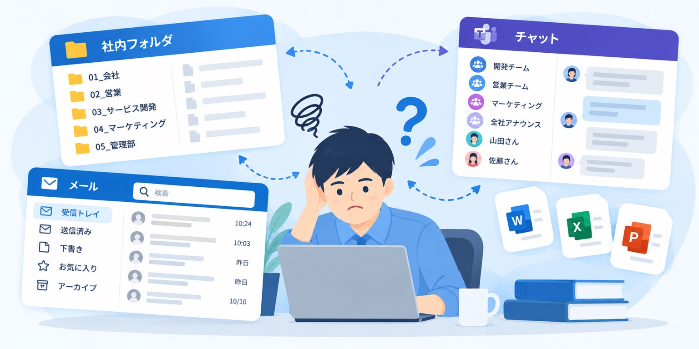
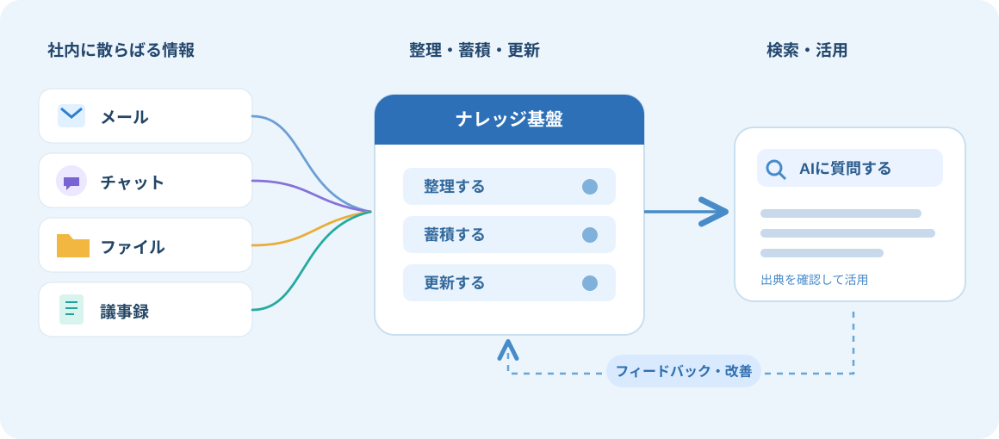

DEMO 01
会議での発言を探す
過去の会議で、誰が何を話したかを質問。
OUR PURPOSE
S.sentiaは、社内に散らばる情報やノウハウを整理し、
テクノロジーの力で、組織の中で活用され続ける資産に変えます。

OUR STORY
「あの資料、どこにあったっけ？」
11年間勤めた会社で、何度も繰り返していたことがあります。過去のメールを探す。社内ルールを確認する。誰かに同じ質問をする。
こうした時間を減らすために、自分の業務を整理し、社内ポータルをつくりました。この経験が、S.sentiaの原点です。
代表についてIN ACTION
会議での発言も、最新の料金表も。
社内にある情報を、AIへの質問から見つける。そんな働き方の一例をご紹介します。
過去の会議で、誰が何を話したかを質問。
料金と注意点を、参照資料付きで確認。
※動画は、社内ナレッジを活用したAI検索の基本的なイメージです。S.sentia独自の検索技術を示すものではありません。実際の機能や回答精度は、利用環境や情報の整備状況によって異なります。
OUR APPROACH
AIが情報を探せることよりも、必要な情報が蓄積され、正しく更新され、誰もが活用できる状態をつくること。それがS.sentiaの仕事です。
